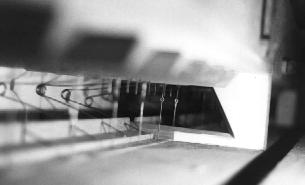
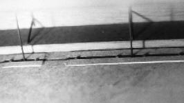
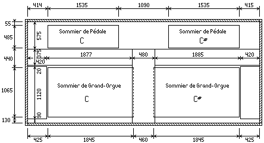
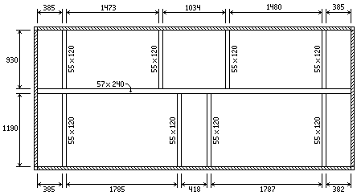
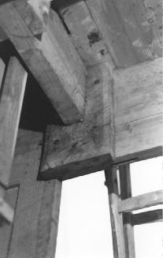
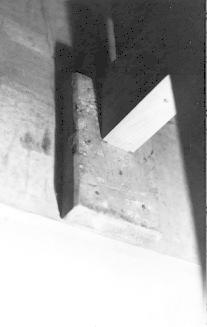
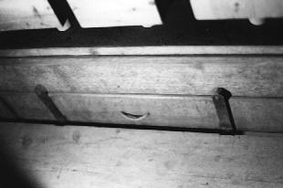
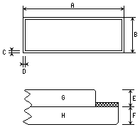

Grand Temple de l'Église Réformée
La mécanique.
Les sommiers |
|
|
Les sommiers |
|
|
Généralités |
Les sommiers sont de type mécanique à registres coulissants. Disposés au niveau de la façade, leur étendue couvre cinquante quatre notes soit de C1 à F5. Au Grand Orgue comme à la Pédale, les tables des sommiers sont clouées sur les barrages de manière classique, Les soupapes sont garnies d'une double peau et sont collées en queue (queue de 20 mm. collée sur la planche verticale du fond de laye). Leurs guides sont en laiton et chaque soupape est numérotée sur son biseau arrière. Quant aux fonds des sommiers, en dehors de la laye, la fermeture des gravures se fait par flipotage en bois de fil, le tout recouvert de papier bleu.
A quelques exceptions près, je n'ait fait le relevé des sommiers que sur ceux placés du côté C.

Division de la laye en deux parties
(Planche percée pour le passage du vent)Afin d'entretenir une solidité parfaite, chaque laye de chaque sommier est divisée en deux parties au moyen d'une planche - épaisse de 32 mm. - munie d'une ouverture pour le passage du vent (voir photo). Cette planche permet également aux deux tampons de laye de chaque sommier de reposer sur son champ. Afin de ne pas intervertir les tampons de laye d'un sommier à l'autre, chacun d'entre-eux possède une marque faite au ciseau à bois qui lui est propre. Chaque marque de chaque tampon a son homonyme gravé sur la ceinture du sommier ; aucune confusion n'est donc possible, les tampons de layes ne peuvent être intervertis. Sur les sommiers du Grand Orgue, en partant du côté C, on peut lire la marque X sur le premier tampon, la marque III sur le deuxième, la marque II sur le troisième et la marque I sur le dernier. On est surpris de remarquer ce décompte surtout quand on sait que les sommiers de Pédale sont, eux, marqués I, II, III et X (toujours en partant du côté C). Le problème se comprend plus facilement quand on sait que les layes du sommier de Pédale sont orientées du côté de la façade alors que celles du Grand Orgue se trouvent dirigées vers le fond de l'instrument. Chaque laye du sommier de Grand Orgue se trouve donc être en regard avec celles des sommiers de Pédale et séparée par le plancher de visite. On peut d'ores et déjà affirmer que les sommiers du Grand Orgue ont été conçus pour avoir leur laye tournée vers la façade ; mais ceci amène une autre affirmation : le sommier C devrait donc logiquement prendre la place de celui placé du côté C# et inversement !
En 1990, lors de mon premier relevé, je n'ai pu faire une analyse complète des perces du sommier de Grand Orgue pour vérifier si la perce du dernier rang aurait pu se trouver au premier car il aurait fallu démonter toutes les chapes et les registres pour arriver à mes fins mais la restauration de 1992 a permis à Laurent PLET d'établir un relevé précis des perces du sommier du côté C. Il n'est pas intinteressant de remarquer qu'il est tout à fait possible d'envisager l'inversion des jeux Montre 8' et Prestant 4' d'une part avec respectivement Trompette 8' et Flûte 8' d'autre part car il ne faut pas oublier que la Trompette 8' a remplacé un Euphone 8' (consommant moins de vent). Quand aux autres jeux, ils peuvent très bien garder leur place sans gêner quelque distribution que ce soit.
Mon hypothèse est de surcroît renforcée après l'analyse des flipots des ouvertures de soupapes. En faisant le relevé des largeurs de gravures, j'ai observé des petit flipots en pin collés le long de la gravure afin d'en réduire la largeur le long de la soupape. Le système est classique ; il permet d'avoir une gravure d'une assez forte section tout en laissant à la soupape des dimensions raisonnables.1 Ces flipots font environ 5 mm. de large et réduisent donc l'ouverture de la soupape de 10 mm (deux flipots par soupape). On peut observer que ces flipots sont collés de C1 à F2. Le bât blesse quand on remarque que E2 n'en possède pas. Tout ordre et toute logique sont rétablis dès lors que l'on intervertit les sommiers (en laissant toutefois les tuyaux de chaque côté à leur place qui reste la bonne). En effet, les flipots prennent alors l'étendue de C1 à E2 sans « trou », état d'autant plus logique qu'il est coutume de faire les changements d'état sur les Do et les Fa. Voilà donc encore une preuve que le facteur qui à conçu ces sommiers a prévu que leur laye soit tournées vers la façade ! Mais dans quel dessein ? Il semble que BEAUCOURT et VOEGELI concevaient souvent leurs instruments munis d'une mécanique suspendue à tirage direct. Dès lors, les soupapes se doivent d'être à l'aplomb des claviers, ce qui n'est pas le cas dans cet orgue. Il ne faut pas oublier que ces facteurs furent parmi les pionniers de la facture industrielle ; cela expliquerait que ces sommiers n'aient pas été spécialement fabriqués pour l'orgue de Saint-Hippolyte. De plus, il n'est pas impossible qu'ils aient été fabriqués dans un autre atelier que celui de BEAUCOURT et VOEGELI bien que cette dernière hypothèse ne soit pas prouvée.
La ceinture des sommiers est en sapin, plaquée de 3 millimètres de chêne. On peut s'étonner d'une telle pratique à la lecture de l'ouvrage de Voegeli « Méthode pour la révision des Orgues d'églises ». En effet, au chapitre « Sommiers », celui-ci assure que « l'on jugera du mérite de l'artiste consciencieux dans l'exécution de son travail. » si la ceinture des sommiers « ne présente [pas] que l'apparence des matériaux convenus, étant tout simplement en sapin et plaquée en bois dur ».
D'où il ressort l'expression populaire : faites comme je vous dis, ne faites surtout pas comme je fais...
|
 Ressorts de Grand Orgue et de Pédale |
|
|
 Passage capillaire |
|
 Vue de dessus de la place qu'occupent les sommiers de Grand Orgue et de Pédale. |
Les mesures posées à l'extérieur du dessin correspondent à la place et aux dimensions des sommiers. Les mesures posées à l'intérieur du dessin correspondent à la place et aux dimensions des planchers de visite. |
Une grande traverse en sapin parcourt toute la largeur de l'orgue et le divise pour ainsi dire en deux parties. Elle est fixée à ses extrémités sur l'entablement par deux tasseaux de maintien (voir photos). C'est sur elle que se greffent huit autres traverses ayant pour fonction de soutenir les sommiers de la Pédale et du Grand Orgue. Une fois de plus, on remarque l'audace de BEAUCOURT qui osa poser une traverse de près de cinq mètres de long, fixée seulement par ces extrémités, sur laquelle repose tous les sommiers, toute la tuyauterie, ainsi que les deux abrégés ! Chose également remarquable, les tasseaux de maintien des petites traverses qui soutiennent les sommiers sont simplement clouées sur l'entablement ; seuls ceux de la grande traverse centrale sont vissés. À l'instar des pratiques usitées pour la charpente du buffet, on nage ici en plein surréalisme car si la théorie assure bien que de telles longueurs de bois peuvent soutenir sans encombre un tel poids, c'est sans compter le travail naturel du bois. Lors de la restauration de 1992, afin de remédier autant que faire se peut à ces extrémités, Laurent PLET a pris avantageusement la décision d'ajouter deux poteaux en sapin pour diminuer la portée de la grande pièce médiane de charpente.
|
On voit ici la grande traverse de section 57 × 240 divisant l'orgue en deux parties inégales et sur laquelle reposent les huit autres traverses de section 55 × 120. |
 Vue de dessus des traverses de soutien des sommiers. |
|
 Vissé |
Tasseaux de maintien de la charpente des sommiers de Grand Orgue et de Pédale. |
 Cloué |
|  |
Ferrures des tampons de laye
|
Les tampons de laye sont composés de deux planches ; la première, (partie H) est en chêne. La seconde, (partie G) est en pin ; elle est recouverte de papier bleu afin de limiter le travail du bois par l'hygrométrie. Cette disposition est la meilleure qui soit pour les tampons de laye. La planche de pin travaillant plus facilement que la planche de chêne, assure au maximum l'étanchéité de la laye. Chaque tampon possède une poignée en ficelle de chanvre. Deux ferrures plates par tampon assurent la fermeture de la laye.
|

Coupe d'un bord et |
||||||||||||||||||||||||||||||||||||||||
|
Le sommier du Récit est, bien entendu, neuf et date dans sa totalité de la restauration de 1992. Il prend place dans la tourelle supérieure de l'orgue qu'avaient prévu BEAUCOURT et VOEGELI sans pouvoir y installer la partie instrumentale, faute de crédit suffisants. Si je n'ai fait aucun relevé de ce sommier faute de temps, il est nécessaire de rappeler ici combien Laurent PLET a suivi scrupuleusement les pratiques des facteurs constructeurs. Cette attitude de restauration possède le mérite de nous offrir une grande logique dans la finalité de l'instrument même si nous ne partageons pas les valeurs propres à définir une qualité de facture en usage en Allemagne autour de 1853.
Les relevés (de Laurent PLET) qui suivent, suffisent toutefois amplement à se faire une idée précise de ce sommier, partant du principe que sa facture est la même que celle des sommiers de Grand Orgue et que ceux de Pédale.
|
|
|||||||||||||||||||||||||||||||||||||||||||||||||||||||||||||||||||||||||||||||||||||||
Note :
(1) : À Saint-Hippolyte, on atteind toutefois le maximum acceptable.